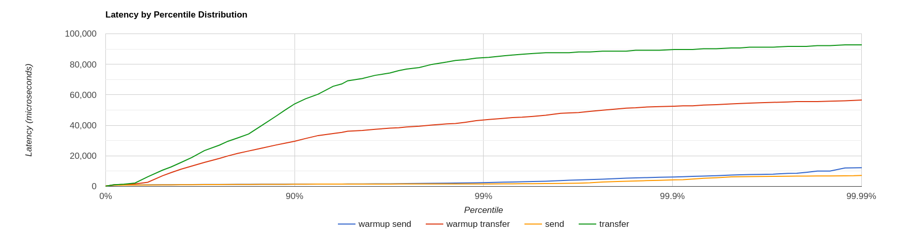
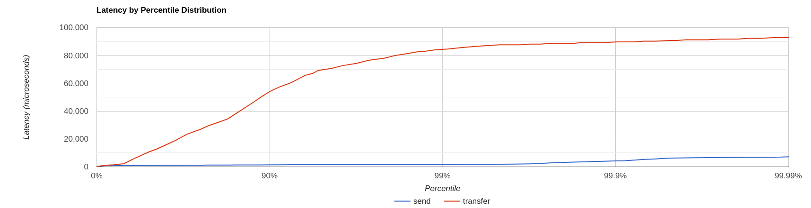
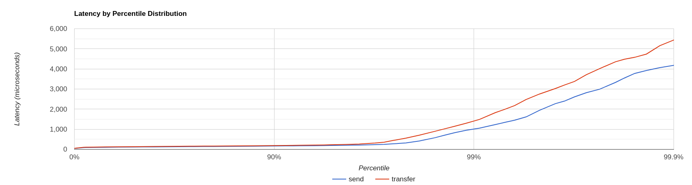

Artemis perf commands
Artemis provides some built-in performance test tools based on the JMS 2 API to help users (and developers) to stress test a configured Artemis broker instance in different scenarios.
These command-line tools won't represent a full-fat benchmark (such as Open Messaging), but can be used as building blocks to produce one. They are also quite useful on their own.
In summary, the provided perf tools are:
producertool: it can generate both all-out throughput or target-rate load, using BytesMessage of a configured sizeconsumertool: it uses a MessageListener to consume messages sent by theproducercommandclienttools: it packs both tools as a single command
Most users will just need the client tool, but the producer and consumer tools allow performing tests in additional scenario(s):
- delaying consumer start, in order to cause the broker to page
- running producers and consumers on different machines
- ...
The examples below (running on a 64 bit Linux 5.14 with Intel® Core™ i7-9850H CPU @ 2.60GHz × 12 with Turbo Boost disabled, 32 GB of RAM and SSD)
show different use cases of increasing complexity. As they progress, some internal architectural details of the tool and the configuration options supported, are explored.
Note:
The tools can run both from within the broker instance's folder or from the base artemisbinfolder. In the former case it will use the same JVM parameter configured on the instance (onartemis.profile), while in the latter case the user should setJAVA_ARGSenvironment variable to override default heap and GC parametersie
-XX:+UseParallelGC -Xms512M -Xmx1024M
Case 1: Single producer Single consumer over a queue
This is the simplest possible case: running a load test with 1 producer and 1 consumer on a non-durable queue TEST_QUEUE,
using non-persistent
1024 bytes long (by default) messages, using auto-acknowledge.
Let's see what happens after typing:
$ ./artemis perf client queue://TEST_QUEUE
Connection brokerURL = tcp://localhost:61616
2022-01-18 10:30:54,535 WARN [org.apache.activemq.artemis.core.client] AMQ212053: CompletionListener/SendAcknowledgementHandler used with confirmationWindowSize=-1. Enable confirmationWindowSize to receive acks from server!
--- warmup false
--- sent: 7316 msg/sec
--- blocked: 6632 msg/sec
--- completed: 7320 msg/sec
--- received: 7317 msg/sec
# ...
The test keeps on running, until SIGTERM or SIGINT signals are sent to the Java process (on Linux Console it translates into pressing CTRL + C).
Before looking what the metrics mean, there's an initial WARN log that shouldn't be ignored:
WARN [org.apache.activemq.artemis.core.client] AMQ212053: CompletionListener/SendAcknowledgementHandler used with confirmationWindowSize=-1. Enable confirmationWindowSize to receive acks from server!
It shows two things:
- the load generator uses async message producers
confirmationWindowSizeis an Artemis CORE protocol specific setting; theperfcommands uses CORE as the default JMS provider
Live Latency Console Reporting
The perf client command can report on Console different latency percentiles metrics by adding --show-latency to the command arguments, but in order to obtain meaningful metrics, we need to address WARN by setting confirmationWindowSize on the producer url,
setting --consumer-url to save applying the same configuration for consumer(s).
In short, the command is using these additional parameters:
--show-latency --url tcp://localhost:61616?confirmationWindowSize=20000 --consumer-url tcp://localhost:61616
Running it
$ ./artemis perf client --show-latency --url tcp://localhost:61616?confirmationWindowSize=20000 --consumer-url tcp://localhost:61616 queue://TEST_QUEUE
--- warmup false
--- sent: 8114 msg/sec
--- blocked: 8114 msg/sec
--- completed: 8114 msg/sec
--- received: 8113 msg/sec
--- send ack time: mean: 113.01 us - 50.00%: 106.00 us - 90.00%: 142.00 us - 99.00%: 204.00 us - 99.90%: 371.00 us - 99.99%: 3455.00 us - max: 3455.00 us
--- transfer time: mean: 213.71 us - 50.00%: 126.00 us - 90.00%: 177.00 us - 99.00%: 3439.00 us - 99.90%: 7967.00 us - 99.99%: 8895.00 us - max: 8895.00 us
# CTRL + C pressed
--- SUMMARY
--- result: success
--- total sent: 70194
--- total blocked: 70194
--- total completed: 70194
--- total received: 70194
--- aggregated send time: mean: 101.53 us - 50.00%: 86.00 us - 90.00%: 140.00 us - 99.00%: 283.00 us - 99.90%: 591.00 us - 99.99%: 2007.00 us - max: 24959.00 us
--- aggregated transfer time: mean: 127.48 us - 50.00%: 97.00 us - 90.00%: 166.00 us - 99.00%: 449.00 us - 99.90%: 4671.00 us - 99.99%: 8255.00 us - max: 27263.00 us
Some notes:
WARNmessage is now gonesend ack timeandtransfer timestatistics are printed at second intervaltotalandaggregatedmetrics are printed on test completion (more on this later)
The meaning of the live latency statistics are:
send ack time: percentiles of latency to acknowledge sent messagestransfer time: percentiles of latency to transfer messages from producer(s) to consumer(s)
The perf commands uses JMS 2 async message producers
that allow the load generator to accumulate in-flight sent messages and depending on the protocol implementation, may block its producer thread due to producer flow control.
e.g: the Artemis CORE protocol can block producers threads to refill producers credits, while the QPID-JMS won't.
The perf tool is implementing its own in-flight sent requests tracking and can be configured to limit the amount of pending sent messages,
while reporting the rate by which producers are "blocked" awaiting completions
Producers threads are
blocked?
Although the load back-pressure mechanism is non-blocking, given that the load generator cannot push further load while back-pressured by the protocol client, the load is semantically "blocked". This detail is relevant to explain the live rate statistics on Console:
By default, the perf tools (i.e: client and producer) limits the number of in-flight request to 1: to change the default setting
users should add --max-pending parameter configuration.
Note:
Setting--max-pending 0will disable the load generator in-flight sent messages limiter, allowing the tool to accumulate an unbounded number of in-flight messages, riskingOutOfMemoryError.
This is NOT RECOMMENDED!
More detail on the metrics:
warmup: the generator phase while the statistics sample is collected; warmup duration can be set by setting--warmupsent: the message sent rateblocked: the rate of attempts to send a new message, "blocked" awaiting--max-pendingrefillcompleted: the rate of message send acknowledgements received by producer(s)received: the rate of messages received by consumer(s)
How to read the live statistics?
The huge amount of blocked vs sent means that the broker wasn't fast enough to refill the single --max-pending budget
before sending a new message.
It can be changed into:
--max-pending 100
to our previous command:
$ ./artemis perf client --warmup 20 --max-pending 100 --show-latency --url tcp://localhost:61616?confirmationWindowSize=20000 --consumer-url tcp://localhost:61616 queue://TEST_QUEUE
Connection brokerURL = tcp://localhost:61616?confirmationWindowSize=20000
# first samples shows very BAD performance because client JVM is still warming up
--- warmup true
--- sent: 27366 msg/sec
--- blocked: 361 msg/sec
--- completed: 27305 msg/sec
--- received: 26195 msg/sec
--- send ack time: mean: 1743.39 us - 50.00%: 1551.00 us - 90.00%: 3119.00 us - 99.00%: 5215.00 us - 99.90%: 8575.00 us - 99.99%: 8703.00 us - max: 23679.00 us
--- transfer time: mean: 11860.32 us - 50.00%: 11583.00 us - 90.00%: 18559.00 us - 99.00%: 24319.00 us - 99.90%: 31359.00 us - 99.99%: 31615.00 us - max: 31615.00 us
# ... > 20 seconds later ...
# performance is now way better then during warmup
--- warmup false
--- sent: 86525 msg/sec
--- blocked: 5734 msg/sec
--- completed: 86525 msg/sec
--- received: 86556 msg/sec
--- send ack time: mean: 1109.13 us - 50.00%: 1103.00 us - 90.00%: 1447.00 us - 99.00%: 1687.00 us - 99.90%: 5791.00 us - 99.99%: 5983.00 us - max: 5983.00 us
--- transfer time: mean: 4662.94 us - 50.00%: 1679.00 us - 90.00%: 12159.00 us - 99.00%: 14079.00 us - 99.90%: 14527.00 us - 99.99%: 14783.00 us - max: 14783.00 us
# CTRL + C
--- SUMMARY
--- result: success
--- total sent: 3450389
--- total blocked: 168863
--- total completed: 3450389
--- total received: 3450389
--- aggregated send time: mean: 1056.09 us - 50.00%: 1003.00 us - 90.00%: 1423.00 us - 99.00%: 1639.00 us - 99.90%: 4287.00 us - 99.99%: 7103.00 us - max: 19583.00 us
--- aggregated transfer time: mean: 18647.51 us - 50.00%: 10751.00 us - 90.00%: 54271.00 us - 99.00%: 84991.00 us - 99.90%: 90111.00 us - 99.99%: 93183.00 us - max: 94207.00 us
Some notes on the results:
- we now have a reasonable
blocked/sentratio (< ~10%) - sent rate has improved ten-fold if compared to previous results
And on the SUMMARY statistics:
totalcounters include measurements collected withwarmup trueaggregatedlatencies don't include measurements collected withwarmup true
How to compare latencies across tests?
The Console output format isn't designed for easy latency comparisons, however the
perf commands expose --hdr <hdr file name> parameter to produce a HDR Histogram compatible report that can be opened with different visualizers
eg Online HdrHistogram Log Analyzer, HdrHistogramVisualizer or HistogramLogAnalyzer.
Note:
Any latency collected trace on this guide is going to use Online HdrHistogram Log Analyzer as HDR Histogram visualizer tool.
Below is the visualization of the HDR histograms collected while adding to the previous benchmark
--hdr /tmp/non_durable_queue.hdr
Whole test execution shows tagged latencies, to distinguish warmup ones:

Filtering out warmup latencies, it looks like

Latency results shows that at higher percentiles transfer latency is way higher than the sent one
(reminder: sent it's the time to acknowledge sent messages), probably meaning that some queuing-up is happening on the broker.
In order to test this theory we switch to target rate tests.
Case 2: Target Rate Single producer Single consumer over a queue
perf client and perf producer tools allow specifying a target rate to schedule producer(s) requests: adding
--rate <msg/sec integer value>
The previous example last run shows that --max-pending 100 guarantees < 10% blocked/sent messages with
aggregated latencies
--- aggregated send time: mean: 1056.09 us - 50.00%: 1003.00 us - 90.00%: 1423.00 us - 99.00%: 1639.00 us - 99.90%: 4287.00 us - 99.99%: 7103.00 us - max: 19583.00 us
--- aggregated transfer time: mean: 18647.51 us - 50.00%: 10751.00 us - 90.00%: 54271.00 us - 99.00%: 84991.00 us - 99.90%: 90111.00 us - 99.99%: 93183.00 us - max: 94207.00 us
We would like to lower transfer time sub-millisecond; let's try
by running a load test with ~30% of the max perceived sent rate, by setting:
--rate 30000 --hdr /tmp/30K.hdr
The whole command is then:
$ ./artemis perf client --rate 30000 --hdr /tmp/30K.hdr --warmup 20 --max-pending 100 --show-latency --url tcp://localhost:61616?confirmationWindowSize=20000 --consumer-url tcp://localhost:61616 queue://TEST_QUEUE
# ... after 20 warmup seconds ...
--- warmup false
--- sent: 30302 msg/sec
--- blocked: 0 msg/sec
--- completed: 30302 msg/sec
--- received: 30303 msg/sec
--- send delay time: mean: 24.20 us - 50.00%: 21.00 us - 90.00%: 54.00 us - 99.00%: 72.00 us - 99.90%: 233.00 us - 99.99%: 659.00 us - max: 731.00 us
--- send ack time: mean: 150.48 us - 50.00%: 120.00 us - 90.00%: 172.00 us - 99.00%: 1223.00 us - 99.90%: 2543.00 us - 99.99%: 3183.00 us - max: 3247.00 us
--- transfer time: mean: 171.53 us - 50.00%: 135.00 us - 90.00%: 194.00 us - 99.00%: 1407.00 us - 99.90%: 2607.00 us - 99.99%: 3151.00 us - max: 3183.00 us
# CTRL + C
--- SUMMARY
--- result: success
--- total sent: 1216053
--- total blocked: 845
--- total completed: 1216053
--- total received: 1216053
--- aggregated delay send time: mean: 35.84 us - 50.00%: 20.00 us - 90.00%: 55.00 us - 99.00%: 116.00 us - 99.90%: 3359.00 us - 99.99%: 5503.00 us - max: 6495.00 us
--- aggregated send time: mean: 147.38 us - 50.00%: 117.00 us - 90.00%: 165.00 us - 99.00%: 991.00 us - 99.90%: 4191.00 us - 99.99%: 5695.00 us - max: 7103.00 us
--- aggregated transfer time: mean: 178.48 us - 50.00%: 134.00 us - 90.00%: 188.00 us - 99.00%: 1359.00 us - 99.90%: 5471.00 us - 99.99%: 8831.00 us - max: 12799.00 us
We've now achieved sub-millisecond transfer latencies until 90.00 pencentile.
Opening /tmp/30K.hdr makes easier to see it:

Now send and transfer time looks quite similar and there's no sign of queueing, but...
What delay send time means?
This metric is borrowed from the Coordinated Omission concept, and it measures the delay of producer(s) while trying to send messages at the requested rate.
The source of such delay could be:
- slow responding broker: the load generator reached
--max-pendingand the expected rate cannot be honored - client running out of resources (lack of CPU time, GC pauses, etc etc): load generator cannot keep-up with the expected rate because it is just "too fast" for it
- protocol-dependent blocking behaviours: CORE JMS 2 async send can block due to
producerWindowSizeexhaustion
A sane run of a target rate test should keep delay send time under control or investigation actions must be taken
to understand what's the source of the delay.
Let's show it with an example: we've already checked the all-out rate of the broker ie ~90K msg/sec
By running a --rate 90000 test under the same conditions, latencies will look as

It clearly shows that the load generator is getting delayed and cannot keep-up with the expected rate.
Below is a more complex example involving destinations (auto)generation with "asymmetric" load i.e: the producer number is different from consumer number.
Case 3: Target Rate load on 10 durable topics, each with 3 producers and 2 unshared consumers
The perf tool can auto generate destinations using
--num-destinations <number of destinations to generate>
and naming them by using the destination name specified as the seed and an ordered sequence suffix.
eg
--num-destinations 3 topic://TOPIC
would generate 3 topics: TOPIC0, TOPIC1, TOPIC2.
With the default configuration (without specifying --num-destinations) it would just create TOPIC, without any numerical suffix.
In order to create a load generation on 10 topics, each with 3 producers and 2 unshared consumers:
--producers 3 --consumers 2 --num-destinations 10 topic://TOPIC
The whole perf client all-out throughput command would be:
# same as in the previous cases
./artemis perf client --warmup 20 --max-pending 100 --s
how-latency --url tcp://localhost:61616?confirmationWindowSize=20000 --consumer-url tcp://localhost:61616 \
--producers 3 --consumers 2 --num-destinations 10 --durable --persistent topic://DURABLE_TOPIC
# this last part above is new
and it would print...
javax.jms.IllegalStateException: Cannot create durable subscription - client ID has not been set
Given that the generator is creating unshared durable Topic subscriptions, is it mandatory to set a ClientID for each connection used.
The perf client tool creates a connection for each consumer by default and auto-generates both ClientIDs
and subscriptions names (as required by the unshared durable Topic subscriptions API).
ClientID still requires users to specify Client ID prefixes with --clientID <Client ID prefix> and takes care to unsubscribe the consumers on test completion.
The complete commands now looks like:
./artemis perf client --warmup 20 --max-pending 100 --show-latency --url tcp://localhost:61616?confirmationWindowSize=20000 --consumer-url tcp://localhost:61616 \
--producers 3 --consumers 2 --num-destinations 10 --durable --persistent topic://DURABLE_TOPIC --clientID test_id
# after few seconds
--- warmup false
--- sent: 74842 msg/sec
--- blocked: 2702 msg/sec
--- completed: 74641 msg/sec
--- received: 146412 msg/sec
--- send ack time: mean: 37366.13 us - 50.00%: 37119.00 us - 90.00%: 46079.00 us - 99.00%: 68095.00 us - 99.90%: 84479.00 us - 99.99%: 94719.00 us - max: 95743.00 us
--- transfer time: mean: 44060.66 us - 50.00%: 43263.00 us - 90.00%: 54527.00 us - 99.00%: 75775.00 us - 99.90%: 87551.00 us - 99.99%: 91135.00 us - max: 91135.00 us
# CTRL + C
--- SUMMARY
--- result: success
--- total sent: 2377653
--- total blocked: 80004
--- total completed: 2377653
--- total received: 4755306
--- aggregated send time: mean: 39423.69 us - 50.00%: 38911.00 us - 90.00%: 49663.00 us - 99.00%: 66047.00 us - 99.90%: 85503.00 us - 99.99%: 101887.00 us - max: 115711.00 us
--- aggregated transfer time: mean: 46216.99 us - 50.00%: 45311.00 us - 90.00%: 57855.00 us - 99.00%: 78335.00 us - 99.90%: 97791.00 us - 99.99%: 113151.00 us - max: 125439.00 us
Results shows that tranfer time isn't queuing up, meaning that subscribers are capable to keep-up with the producers: hence a reasonable
rate to test could be ~80% of the perceived sent rate ie --rate 60000:
./artemis perf client --warmup 20 --max-pending 100 --show-latency --url tcp://localhost:61616?confirmationWindowSize=20000 --consumer-url tcp://localhost:61616 \
--producers 3 --consumers 2 --num-destinations 10 --durable --persistent topic://DURABLE_TOPIC --clientID test_id \
--rate 60000
# after many seconds while running
--- warmup false
--- sent: 55211 msg/sec
--- blocked: 2134 msg/sec
--- completed: 54444 msg/sec
--- received: 111622 msg/sec
--- send delay time: mean: 6306710.04 us - 50.00%: 6094847.00 us - 90.00%: 7766015.00 us - 99.00%: 8224767.00 us - 99.90%: 8257535.00 us - 99.99%: 8257535.00 us - max: 8257535.00 us
--- send ack time: mean: 50072.92 us - 50.00%: 50431.00 us - 90.00%: 57855.00 us - 99.00%: 65023.00 us - 99.90%: 71167.00 us - 99.99%: 71679.00 us - max: 71679.00 us
--- transfer time: mean: 63672.92 us - 50.00%: 65535.00 us - 90.00%: 78847.00 us - 99.00%: 86015.00 us - 99.90%: 90623.00 us - 99.99%: 93183.00 us - max: 94719.00 us
# it won't get any better :(
What's wrong with the send delay time?
Results show that the load generator cannot keep up with the expected rate and it's accumulating a huge delay
on the expected scheduled load: lets trying fixing it by adding more producers
threads, adding
--threads <producer threads>
By using two producers threads, the command now looks like:
./artemis perf client --warmup 20 --max-pending 100 --show-latency --url tcp://localhost:61616?confirmationWindowSize=20000 --consumer-url tcp://localhost:61616 \
--producers 3 --consumers 2 --num-destinations 10 --durable --persistent topic://DURABLE_TOPIC --clientID test_id \
--rate 60000 --threads 2
# after few seconds warming up....
--- warmup false
--- sent: 59894 msg/sec
--- blocked: 694 msg/sec
--- completed: 58925 msg/sec
--- received: 114857 msg/sec
--- send delay time: mean: 3189.96 us - 50.00%: 277.00 us - 90.00%: 10623.00 us - 99.00%: 35583.00 us - 99.90%: 47871.00 us - 99.99%: 56063.00 us - max: 58367.00 us
--- send ack time: mean: 31500.93 us - 50.00%: 31231.00 us - 90.00%: 48383.00 us - 99.00%: 65535.00 us - 99.90%: 83455.00 us - 99.99%: 95743.00 us - max: 98303.00 us
--- transfer time: mean: 38151.21 us - 50.00%: 37119.00 us - 90.00%: 55807.00 us - 99.00%: 84479.00 us - 99.90%: 104959.00 us - 99.99%: 118271.00 us - max: 121855.00 us
send delay time now seems under control, meaning that the load generator need some tuning in order to work at its best.